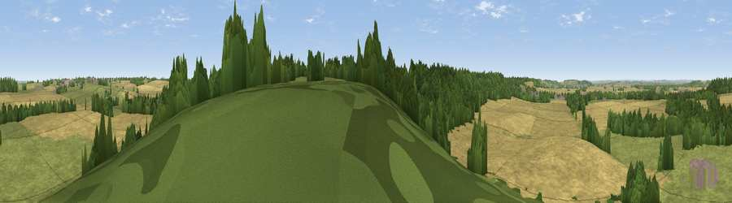

Viewpoint near Bunny
#25065 in England · top 35% of its area beats it · near BunnyWhere it is
The exact computed spot (SK 59825 28975). Click the marker for map links.
The view, rendered

A 360° render of this exact spot computed from the terrain model, tree cover and land cover — summer colours, afternoon light, calibrated against photographs of famous viewpoints. Real trees, hedges and buildings will differ in detail.
The panorama
Grey silhouette: terrain skyline in each direction (720 bearings, Earth curvature and refraction included). Dashed green: skyline with trees (+15 m) and buildings (+8 m) as obstacles. Blue strip: how far the ground is visible on each bearing.
Where the view opens
Wedge length = distance to the farthest visible ground on that bearing (vegetation-aware). Rings at 10, 25 and 50 km.
What fills the view
44% cropland · 37% grassland · 17% woodland · 2% built-up
Angular shares of the visible panorama (visual magnitude), not map area. Landscape diversity 0.48 (0–1 Shannon).
Key numbers
More beautiful places nearby
The staircase of upgrades: each row has a higher view potential than everything closer. Driving times are estimates from straight-line distance, calibrated against real road routing — check an actual route before setting out.
| Place | Direction | Drive | Score |
|---|---|---|---|
| Viewpoint near Bunny | WSW · 2 km | ~4 min | 48.7 |
| Viewpoint near Gotham | WNW · 7 km | ~15 min | 54.0 |
| Viewpoint near Wartnaby | ESE · 12 km | ~22 min | 56.4 |
| Viewpoint near Wartnaby | ESE · 12 km | ~23 min | 61.6 |
| Viewpoint near Strelley | NW · 15 km | ~28 min | 62.6 |
| No Man's Lane | WNW · 16 km | ~29 min | 65.8 |
| Viewpoint near Woodhouse Eaves | SSW · 17 km | ~29 min | 77.7 |
| Viewpoint near Mow Cop | WNW · 79 km | ~103 min | 78.9 |
52.85495, -1.11299 · source: screening · position refined by local search. Computed location — check access rights before visiting.